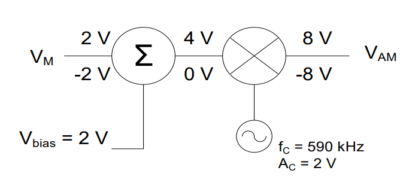
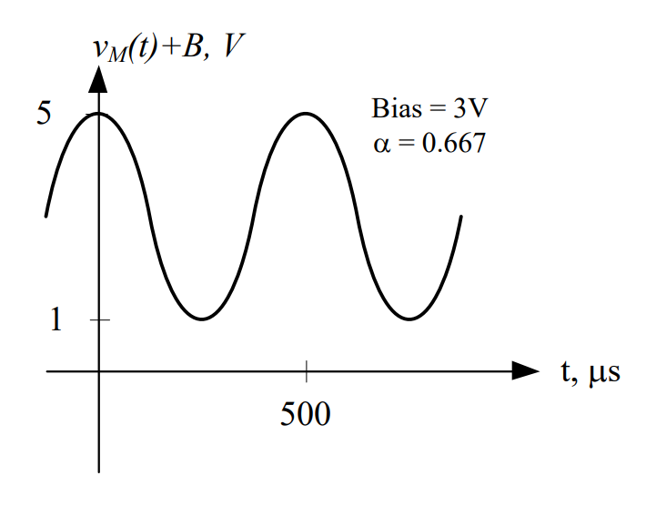

Objective 3.1#
LO# |
Description |
|---|---|
3.1 |
I can determine the modulation index, output signal, and output signal bandwidth of an Amplitude Modulation (AM) system and assess whether the system is under-modulated, over-modulated, or fully modulated. |
Modulation 1#
Without any technological assistance, our ability to communicate over a given distance is limited by how loud we can speak. If we wanted to talk to someone next to us, we could use a normal conversational volume. However, if we wanted to talk to someone on the other side of a crowded room, we would need to yell fairly loud to get their attention. As the communication distance increases, we would need to become louder and louder in order to be heard. But, what if we wanted to talk to someone many miles away, or deliver information without sending a messenger?
Whether you want to relax and listen to music from your favorite radio station, or whether your life depends on maintaining a tactical communication link during a battle with enemy forces, modulation plays a key role. In fact, understanding how communication systems (radio, satellites, optical fiber links, even the dial-up modem or network card in your computer) operate requires a basic understanding of modulation.
Another advantage of modulation is the ability to transmit more than one signal over a single communications channel. A single telephone line can carry both voice and computer data because the two signals use different frequencies for modulation. Similarly, many radio stations can serve the same area because their signals use different frequencies for modulation.
Although you most likely won’t be designing or building transmitters any time soon, even if you’re only operating a communication system of some kind, a basic understanding of how it works can be a great help.
Figure 1 shows a block diagram of a simplified communications system. This block diagram serves to show where we are going with our discussion of communications systems. We already discussed transducers and transducer interfaces, and we will be covering modulation, antennas, and the propagation of electromagnetic waves over the course of this block.

Types of Modulation#
To modulate simply means to change something in some way. In Electrical and Computer Engineering, we normally modulate a sinusoidal signal called the carrier signal, using a message signal. In this case, the information in the message signal is encoded within the carrier signal. Consider a carrier signal of the form:
With this type of signal, it is possible change either the amplitude (Ac), the frequency (fc), or the phase (φc) of the sinusoidal carrier in such a way that the information (e.g. voice, music, video, targeting coordinates, intel report, etc.) becomes part of the modulated carrier, vout(t):
Note how the amplitude, frequency, and phase are now shown as time-varying. The basic block diagram of a modulator is shown in Figure 2:
Figure 2: Block diagram of a modulator.
The basic modulation types are:
Amplitude modulation (AM) – information carried in the signal by varying the amplitude of the carrier (\(A_{c})\) in time.
Frequency modulation (FM) – information carried in the signal by varying the frequency of the carrier (\(f_{c})\) in time.
Phase modulation (PM) – information carried in the signal by varying the phase of the carrier \((\phi_{c})\) in time.
We are most familiar with AM and FM terminology because of the radios in our cars, but Figure 3 shows the difference between the two.
Figure 3: Amplitude modulation compared with Frequency modulation.
In Figure 3, the message, vm(t), is the voice or data signal we want to send. The carrier, vc(t), will be modified by vm(t), depending on the type of modulation. The output of the modulator is either vFM(t) (message carried in the frequency) in the case of an FM modulator, or vAM(t) (message carried in the amplitude) in the case of an AM modulator. The difference between the outputs of the two different modulation schemes is evident. Of course, to the listener the most noticeable difference when listening to an AM radio versus an FM radio is the noise. This is because, in general, noise affects the amplitude of a signal. Since the message in an AM signal is contained entirely in the amplitude, AM signals are very susceptible to noise. For FM signals, however, the message is contained in the frequency and not the amplitude. Even if the amplitude of an FM signal is affected by a noisy environment, such as a lightning storm, this noise is effectively ignored during the demodulation process, since the amplitude and frequency are independent.
Along with FM, Phase Modulation (PM) signals are also far more immune to noise than AM. Although PM is typically much less familiar to most people, it is used extensively with cell phones. PM is based on the signal’s rate of change (or slope). The highest frequency in the PM signal occurs when the message has the steepest positive slope. The lowest frequency occurs where the message has the steepest negative slope. The graphs below compare the output of an FM modulator compared with a PM demodulator. As it appears, PM and FM are very similar.
Figure 4: Frequency modulation vs. phase modulation.
In each of these graphs, the message displayed is a sinusoid. However, the message signal will vary depending on the application – and does not have to be a sinusoid. In general, there are two types of messages: analog and digital. While the principles between the two are the same, the message content will vary based on the scheme used. This class will focus on analog modulation.
Amplitude Modulation#
Amplitude modulation makes use of a device called a function multiplier, but allows for the addition of a DC bias voltage, Vbias. Adding the bias voltage can make demodulation more straightforward. To add the DC bias voltage, we just use a summer before the function multiplier, as shown in the block diagram in Figure 5.
The function multiplier is an electronic device that produces an output signal equal to the product of the input signals. When radio frequency (RF) signals are used, this device is also known as a mixer. The function multiplier is different than the scalar multiplier (amplifier) discussed earlier with transducer interfaces because the output of the scalar multiplier is a scaled version of the input. However, the output of the function multiplier is a signal whose shape follows the product of the input functions. Keep in mind the units do not multiply, so the product of two voltage signals will have units of V, not of V2.
Figure 5: A generic AM block diagram.
Notice the output of the modulator has the same frequency as the carrier; however, the amplitude varies as the message changes over time. In fact, the message signal creates a kind of envelope, while the carrier signal “colors in between the lines” of that envelope. Two important facts to note with function multipliers:
The carrier frequency is ALWAYS much higher than the message frequency.
The carrier is ALWAYS a sinusoid; however, the message could be any analog or digital signal… it’s the information you want to communicate!
Mathematically speaking, we represent the result of the modulator as:
where the “m” subscript denotes the message and the “c” subscript denotes the carrier. This equation looks both scary and complicated, but it really isn’t. Remember, when dealing with sinusoidal terms, the two key pieces of information needed are: amplitude and frequency. In generic terms, the output of the function multiplier is:
Therefore, you can think of the function multiplier as dividing the combined energy contained in the message and carrier signals between two new sinusoidal signals: one at the difference of the frequencies and one at the sum of the frequencies. If there is a bias, it simply produces a signal at the carrier frequency. It is perhaps more intuitive to visualize this result in the frequency domain:
Figure 6: AM in the frequency domain.
Now is a good time to introduce a few new terms. The first of these is modulation index (α) which is given by the equation:
We can determine the modulation index directly from the frequency plot, if it is available. We simply add up signals in the sidebands and divide them by the signal at the carrier frequency:
AM signals can be characterized by their modulation index, where we call the signals, over-, under-, or 100%-modulated:
α > 1 means the signal is over-modulated.
α < 1 means the signal is under-modulated.
α = 1 means the signal is 100%-modulated.
AM Signals in the Time Domain#
While you will not be asked to draw time domain modulation plots on your own, you do need to understand what they look like and why. The output of the function multiplier can be drawn in the time domain by following these steps:
The message is drawn on the graph using dashed lines.
The amplitude is set to (AC * AM), and the period of the message signal is marked.
The message reflection is then represented about the x-axis using dashed lines.

The carrier frequency is then used to “color in” between the two dashed lines. The dashed lines are called the envelope, and are used as a guideline to better distinguish the changes in amplitude of the carrier.
We could also represent the output signal in the frequency domain, by identifying the two key pieces of information – amplitude and frequency.
Therefore, we can plot vout(t) as:
Notice the the message is contained in frequencies symetrical about the carrier frequency, 100kHz. So, by changing the carrier frequency, we can change the location of the output signal on the frequency spectrum. If, for example, we wanted to broadcast at 1MHz, we would simply change the carrier frequency to 1MHz.
Modulation Example#
To understand the effect of bias, consider the message signal vM(t) = 2 cos(360°*2k*t) V , which is input into the following amplitude modulator. We will start with a bias of 0V, then change it to 1V, 2V and finally to 3V. We will graph the output signal, vAM, in both the time and frequency domain for each case.
It would be helpful at first to list the known quantities:
AM = 2V
AC = 2V
fc = 590 kHz
τc = 1.7 µs
fm = 2 kHz
τm = 500 µs
Bias = 0V
We begin with the bias set to 0V.
1) The graph of the message signal is: |
|
2) The amplitude of our message signal is 2V, which means it varies from 2V to -2V. Now, we can draw the graph in the time domain. First, the message signal and its reflection are represented about the x-axis as a dashed line. |
|
3) Finally, the carrier signal is drawn between these envelopes and we label the y-axis |
Notice the maximum and minimum values of the previous two figures are different. To find out why, let’s look at the maximum and minimum values of the message as it flows through the modulation system:

When we start, our message has an amplitude of 2V, which means it varies between 2V and -2V. Then, as we pass through the function multiplier, the message is multiplied by a carrier signal. Since the amplitude of the carrier signal is 2V, we simply multiply 2V and -2V by 2, giving us 4V and -4V.
In the equation for this signal, the amplitude of the message signal (AM) is 2V and the bias voltage (Vbias) is 0V; therefore, the modulation index is:
While this may not make much sense mathematically, by definition whenever α > 1, then our output signal will be over-modulated. It is important to note that when we do not include bias in our design, the output signal will always be over-modulated. Notice in the graph above that part of the signal still drops below the x-axis, and the two envelopes overlap. This is another indication the output signal will be over-modulated.
Finally, we can easily plot the output signal in the frequency domain. The equation of the output is:
Therefore, we can draw the amplitude spectrum as:
Bias = 1V
1)The amplitude of our message signal is 2V, which means it varies from 2V to -2V. By adding a bias of 1V, we shift the entire signal up, so that it alternates between 3V and -1V, as shown. Therefore, the graph of the message signal is: |
|
2) Now, the message signal and its reflection are represented about the x-axis as a dashed line. |
|
3) Finally, the carrier signal is drawn between these envelopes and we label the y-axis: |


Notice the maximum and minimum values of the previous two figures are different. To find out why, let’s look at the maximum and minimum values of the message as it flows through the modulation system:
When we start, our message has an amplitude of 2V, which means it varies between 2V and -2V. When we pass through the summer, however, we add 1V of bias, so our signal now varies from 3V to -1V. Finally, we pass through the function multiplier where our biased message is multiplied by a carrier signal. Since the amplitude of the carrier signal is 2V, we simply multiply 3V and -1V by 2 or -2 and pick the biggest and smallest results, giving us 6V and -6V.
In the equation for this signal, the amplitude of the message signal (AM) is 2V and the bias voltage (Vbias) is 1V; therefore, the modulation index is:
By definition, whenever α > 1, then our output signal will be over-modulated. Notice in the graph above that part of the signal still drops below the x-axis, and the two envelopes overlap. This is another indication the output signal will be over-modulated.
Finally, we can write the equation of the output signal as:
So we can plot the frequency amplitude spectrum as:
Notice how the bias voltage has generated a new “spike” at the carrier frequency, and we can calculate the modulation index directly from the amplitude spectrum:
Which agrees with our previous calculation.
Bias = 2V
1) We’ve now shifted the original curve up to the point where it just touches the x-axis. This will always occur when the bias equals the amplitude of the message signal. The message signal is: |
|
2) Following the same steps for graphing, the output, vAM(t), looks as shown: |
We can examine the maximum and minimums for our 100% modulated case as before:

The modulation index is for this system is:
Whenever α = 1, we will have an output signal that is 100%-modulated. This case occurs when the message just barely touches the x-axis.
Finally, we can write the equation of the output signal as:
and, the amplitude spectrum is:
Notice how the spike at the carrier frequency is increasing based on the increasing DC bias.
Bias = 3V
1) Our signal now varies from 5V to 1V, with none of the signal dropping below or touching the x-axis. Therefore, the message signal is: |
 |
2) Following the same steps for graphing, the output, vAM(t), looks as shown: |
|

The maximum and minimums of the signals as they flow through the modulator are:
Therefore, the message envelope varies from 10 V to 2 V and the mirror image varies from -2 V to -10 V. The output signal is therefore:
And, finally, our modulation index in this case is
When α < 1, our output signal will be under-modulated. Under-modulation occurs when the message signal is entirely above the x-axis, and the two message envelopes do not overlap.
Finally, we can write the equation of the output signal as:
and we can plot the amplitude spectrum:
Again, we notice the increasing signal at the carrier frequency, due to the higher vias voltage.
To summarize the three modulation cases (ignoring the bias = 0V case, which is also over-modulated), the output signals for bias voltages of 1V, 2V, and 3V are given in
Figure 7.
Notice the effect the bias has on the output signals. In the first signal, the two envelopes overlap. As more bias is added, however, the envelopes are pulled apart until by the last signal, they are no longer touching. At 100%-modulation and for under-modulated signals, the phase change of the carrier as it crosses the x-axis does not occur; therefore, it is easier to demodulate and we can use a cheaper demodulator.
Over-Modulated |
100%-Modulated |
Under-Modulated |
|---|---|---|
$\(\alpha\ = \ \frac{A_{M}}{V_{bias}} = \frac{1V}{2V} = \mathbf{2}\)$ |
$\(\alpha\ = \frac{A_{M}}{V_{bias}} = \frac{2V}{2V} = \ \mathbf{1}\)$ |
$\(\alpha\ = \frac{A_{M}}{V_{bias}}= \frac{2V}{3V} =\ \mathbf{0.667}\)$ |
|

Figure 7: Summary of the effect of various DC bias voltages on a modulated signal.
AM with More Than One Frequency#
Although it is instructive to consider how to use a single frequency as a message signal, it is not very practical. In fact, most systems want to send information containing a bandwidth of frequencies. Any communications system, for example, wants to ensure it can at least use data in the audible range (20 Hz – 22kHz) as its message signal. Everything up to this point still applies to a message signal with more than one frequency. For example, consider the following modulation system:
Where vm(t) is now:
In this case, determining the time domain representation of the output signal (vAM) is overly complicated. Even using the distributive law to write the equation of the output signal is overly tedious. However, it is perfectly feasible to draw this signal in the time domain, if we recall that each frequency in the message signal, we will produce two frequencies in the output signal – one at each frequency added to the carrier frequency, and one at each frequency subtracted from the carrier frequency. The amplitude of each frequency will be half of the product of that frequency’s amplitude (in the message signal) and the amplitude of the carrier frequency. So, the example above produces six frequencies in the output:
First, take notice how the spectrum is symmetric around the carrier frequency, fc. The frequencies to the right of the carrier frequency are simply the frequencies from the message signal added to the carrier frequency:
590kHz + 1 kHz = 591 kHz
590 kHz + 3 kHz = 593 kHz
590 kHz + 5 kHz = 595 kHz
The amplitudes of those frequencies are calculated by \(\frac{A_{m}*A_{c}}{2}\):
Finally, observe how the frequencies to the left of the carrier frequency are the higher frequencies reflected (as a mirror image) around the carrier frequency. This represents the difference of the message and carrier frequencies. The amplitudes are also the same as those on the right of the carrier frequency. With this in mind, it does not matter how many frequencies are contained in a signal, we can find the amplitude spectrum by:
Adding the carrier frequency to each message frequency
Calculating the amplitude by \(\frac{A_{m}*A_{c}}{2}\) for each message frequency
Reflecting the results around the carrier frequency on the graph.
Another concept that is useful to understand is the idea of bandwidth. Bandwidth, when taken in context with modulation, is the range of frequencies in a given band, particularly those used for transmitting a signal. When modulating a signal, the transmitter is limited to a certain bandwidth they are allowed to transmit over. To find the bandwidth of a signal, the highest frequency is subtracted from the lowest frequency.
BW = fhigh – flow
Examining our modulated signal, we can determine the bandwidth to be:
BW = fhigh – flow = 595kHz – 585kHz = 10kHz
The bandwidth of a modulated signal is ALWAYS equal to twice the highest frequency of the message signal.
Digital Modulation#
One of the key principles of modulation is that the carrier must be a sinusoidal signal, but the message data can be anything – analog or digital. So far, we have discussed the modulation of analog signals (sinusoids), but it is just as easy to use a digital signal as a message signal. In the case of amplitude modulation, we choose one amplitude as a binary zero (usually 0V) and another as a binary one (5V, for example). When the message signal is a binary zero, the output signal is zero. When the message signal is a one, the output signal’s amplitude is 5V. We call this Amplitude Shift Keying (ASK). We can do the same thing with frequency – one frequency represents a binary zero, while another represents a binary one. This is called Frequency Shift Keying (FSK). The two methods are shown in Figure 8. Many modern systems make use of both methods to transmit information.
Figure 8: Amplitude Shift Keying and Frequency Shift Keying.
Frequency Division Multiplexing (FDM) System#
In order to send two or more signals through the same channel, we consider two options. First, a signal can be sent at any frequency, but only during specified time intervals. This is called Time Division Multiplexing (TDM). Second, a signal can be sent at any time, but only in a specified frequency range. This is Frequency Division Multiplexing (FDM).
FDM is a multiplexing technique used in analog telephone communications, FM stereo, space vehicle telemetry, and many other applications. In FDM, several independent signals are simultaneously transmitted through one channel by allocating each signal a unique band of the available frequency spectrum. Many times the signal will need to be filtered to restrict its bandwidth over the frequency spectrum to prevent interference with other signals. The signals shown in the frequency domain below are from three local Colorado Springs FM radio stations. Notice each signal has its own unique center frequency, but the frequency content is the same for all three stations (in the audible range). This is an example of FDM.
Breaking this process down, FDM involves band-limiting the input signals, moving their spectra through modulation, and combining these into one composite signal. In general, an FDM signal is generated from any number of input signals (i.e., two or more) by translating each one to a unique frequency band. The translated signals are then added together creating the composite FDM signal whose amplitude spectrum consists of the non-overlapping, frequency translated spectrum of all the signals. Your basic FDM system is shown below.
To guarantee no overlap of spectra at the output of the adder, the input signals to the multipliers must not contain frequencies that would overlap with any of the other channels. Low pass filters serve this purpose, with cutoff frequencies set to the highest desired frequency of the input signal.
Example Problem 1#
Two music signals are multiplexed according to the system below. Graph the output signal in the frequency domain.
Understand: We are multiplexing signals in the frequency domain (two signals on the same graph). This block diagram may be confusing, but please realize it is using fC to mean two different things in this system. For the filters, fC means the cutoff frequency. For the signals coming into the function multipliers, fC means carrier frequency.
Identify Key Information:
Knowns: We know the frequency content of each input signal, the cutoff frequencies of the band-limiting LPFs, and the amplitude and frequency of each function multiplier.
Unknowns: We want to graph the output spectrum.
Assumptions: The transmission system can support the entire bandwidth.
Plan: We will follow each signal through its own modulation path, taking into account frequencies cut off by the LPFs, and determining the final modulated signal. Since the signals are then added together, they can be plotted on the same axis.
Solve: Consider the first signal and what happens when it passes through the filter. Since fC =15 kHz, every frequency above 15 kHz will be cut off. Therefore, the signal coming out of the filter will be:
For the second signal, the filter will also kill all frequencies greater than 15 kHz:
Everything else we do is the same (mathematically) as previous problems. We shift the first signal by the carrier frequency, 120 kHz (since this represents the sum of the frequencies), then draw its mirror image (since this represents the difference of the frequencies). Next, we shift the second signal by 155 kHz and draw its mirror image. If the LPFs were not in the signal chain, the output signals would interfere with each other, however, because the filters enforce a channel bandwidth of 30 kHz, though, the resulting signals no longer interfere with each other.
Answer: The output signal for the multiplexing system is shown in the following graph: